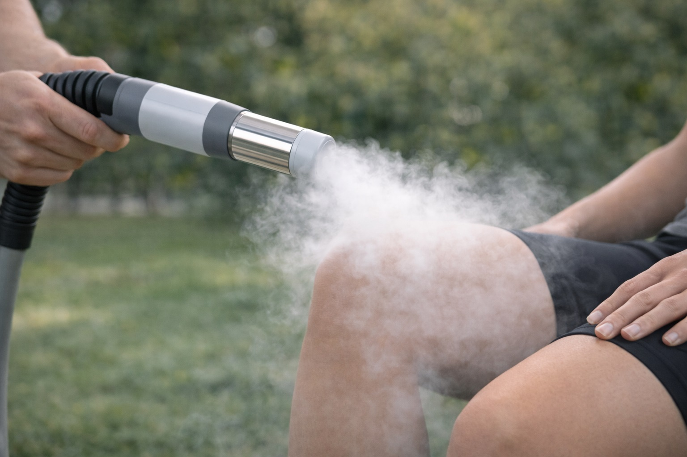
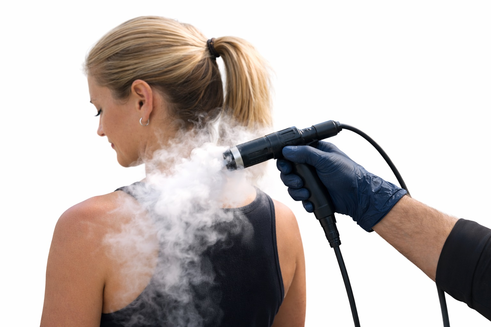
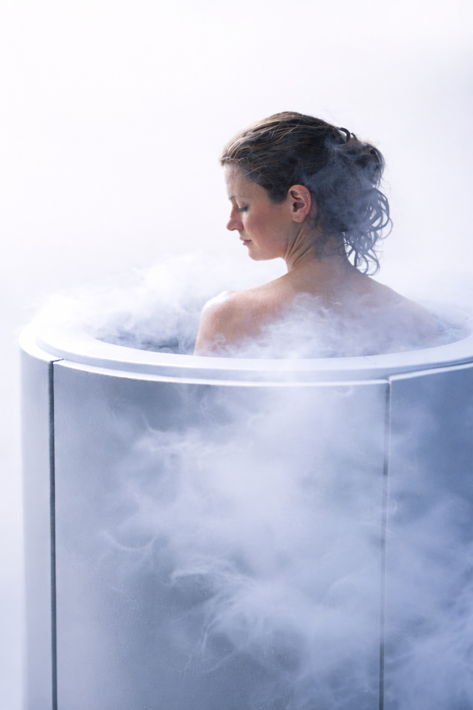

Cryotherapy in Sonoma County
Your complete local guide to cryotherapy — benefits, treatment types, mobile options, and how to choose the right provider.
What Is Cryotherapy?
Cold therapy used for recovery, wellness, and targeted relief


Cryotherapy is a treatment that involves exposing the body to very cold temperatures for a short period. In Sonoma County, both whole-body and localized cryotherapy are available.
How It Works
Cold exposure triggers vasoconstriction followed by increased circulation. Sessions are brief — typically 2–3 minutes for whole-body and slightly longer for localized treatments.
Common Uses in Sonoma County
- Post-workout muscle recovery
- Targeted inflammation relief
- General wellness and refreshment
- Skin appearance support
Benefits of Cryotherapy

Recovery Support
Helps reduce muscle soreness and supports faster recovery after training or physical activity.

Targeted Cooling
Focuses cold therapy on specific areas for more precise relief.

Wellness & Refreshment
Many people report feeling energized and refreshed after sessions.
Types of Cryotherapy Treatments

Whole-Body Cryotherapy
Stand in a chamber exposed to extremely cold air for 2–3 minutes.

Localized Cryotherapy
Targeted cold applied to specific muscles or joints.

Cryofacials
Cold therapy focused on the face for skin appearance and refreshment.

Body-Focused Treatments
Targeted sessions for contouring or skin goals.
Mobile Cryotherapy vs In-Clinic in Sonoma County
Why more locals are choosing mobile services
Mobile Cryotherapy Advantages
- Comes to your home, gym, or office
- Highly targeted localized treatments
- No travel or waiting rooms
- Flexible scheduling
- One-on-one personalized sessions

In-Clinic Cryotherapy
- Fixed location — requires travel
- Often whole-body chamber focused
- Standard appointment structure
Find Cryotherapy Providers in Sonoma County
What to Compare Before Booking
- Treatment types offered (whole-body, localized, cryofacial)
- Mobile vs fixed clinic
- Session length and experience
- Convenience and location
Sonoma County offers a mix of traditional clinics and modern mobile services. Consider your goals — recovery, skin health, or general wellness — when choosing.


Ready to Experience Cryotherapy in Sonoma County?
Compare options, understand the benefits, and choose the treatment style that fits your lifestyle.
Explore Local Providers